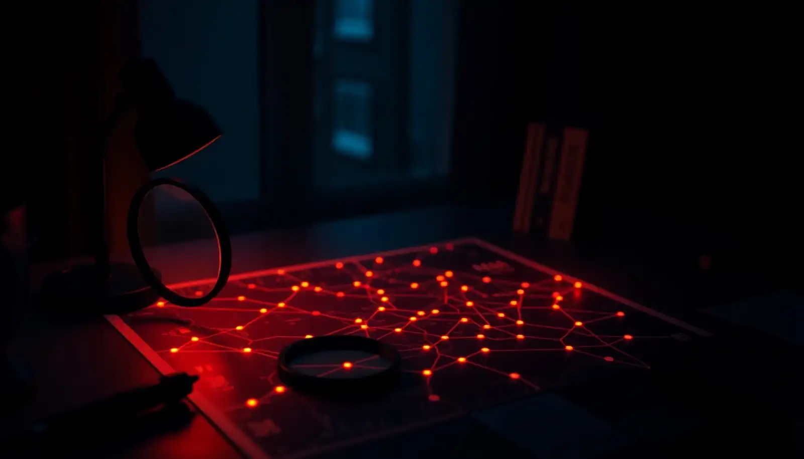
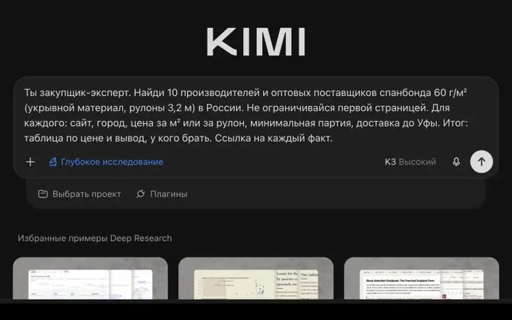
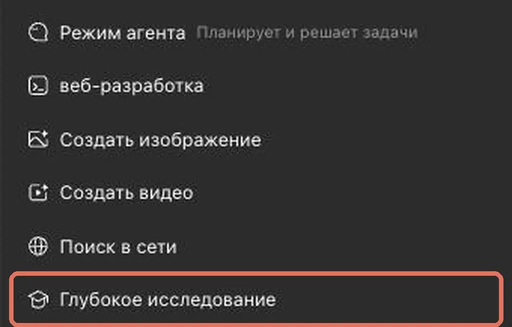
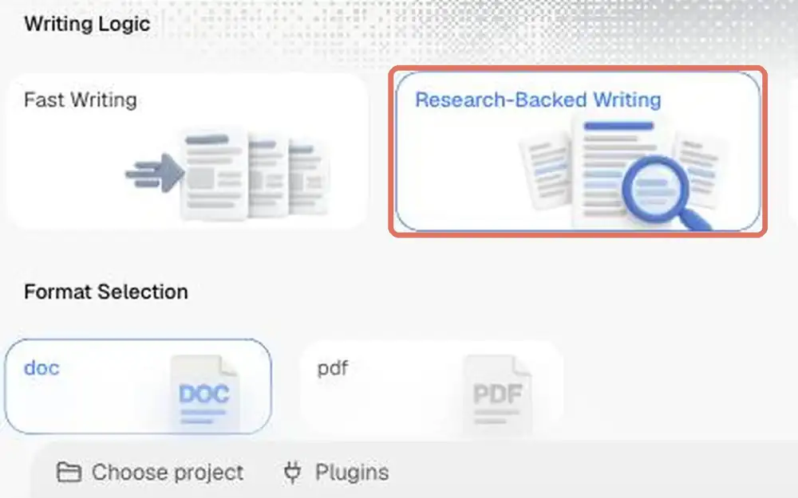
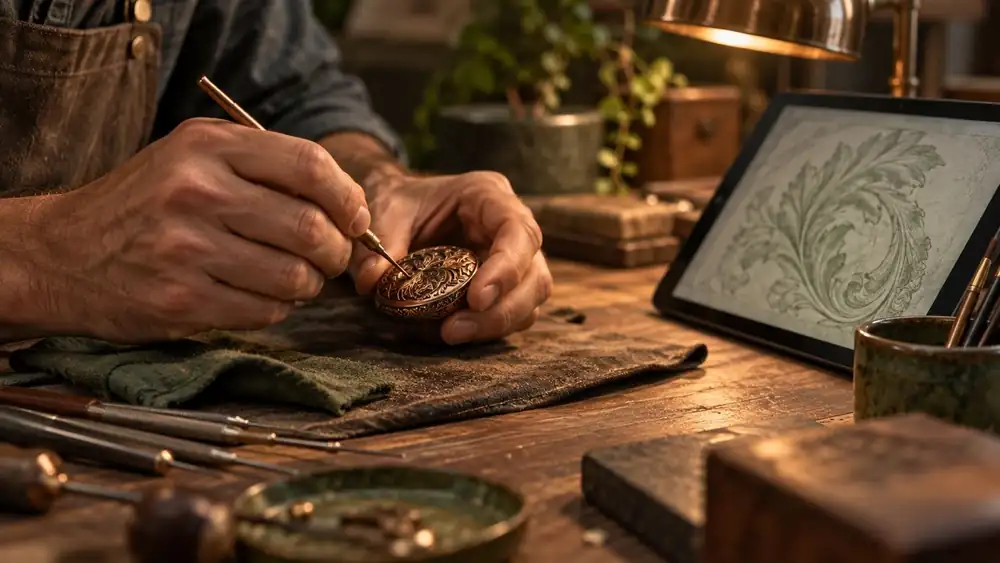
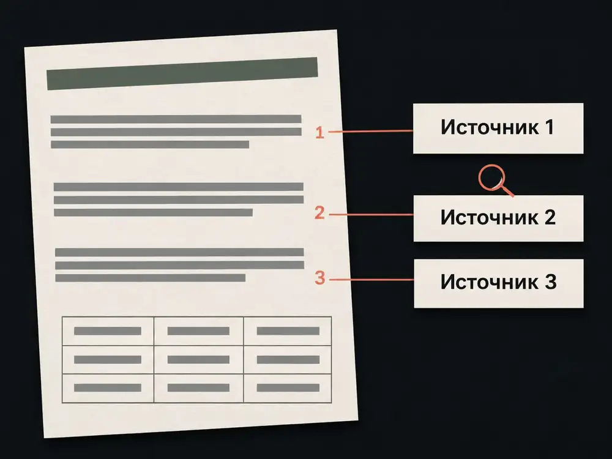
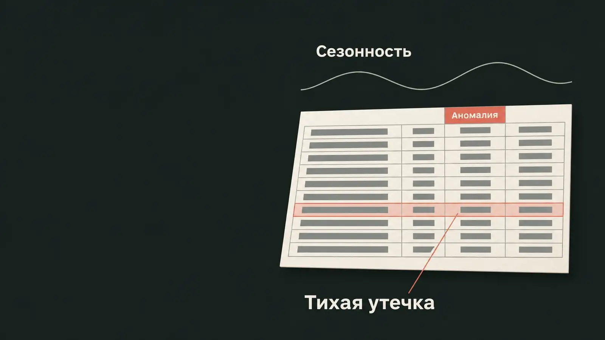
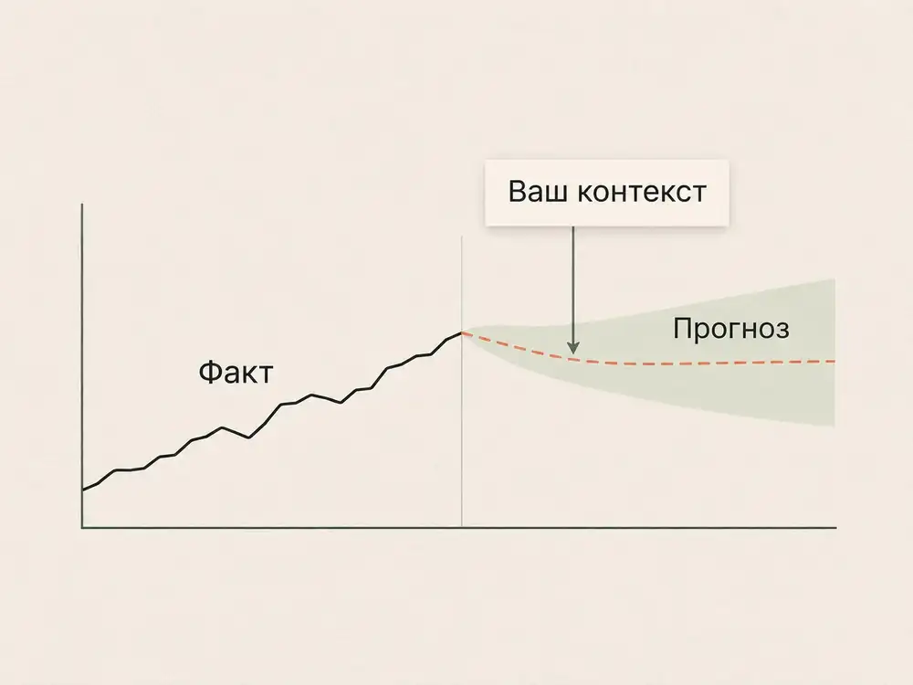
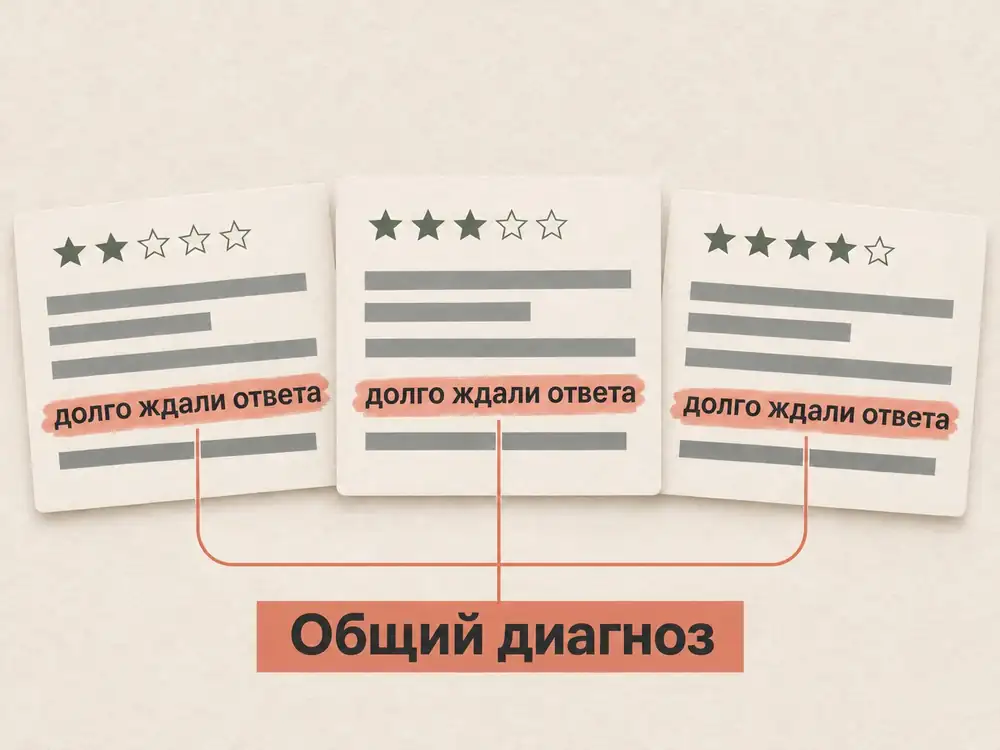
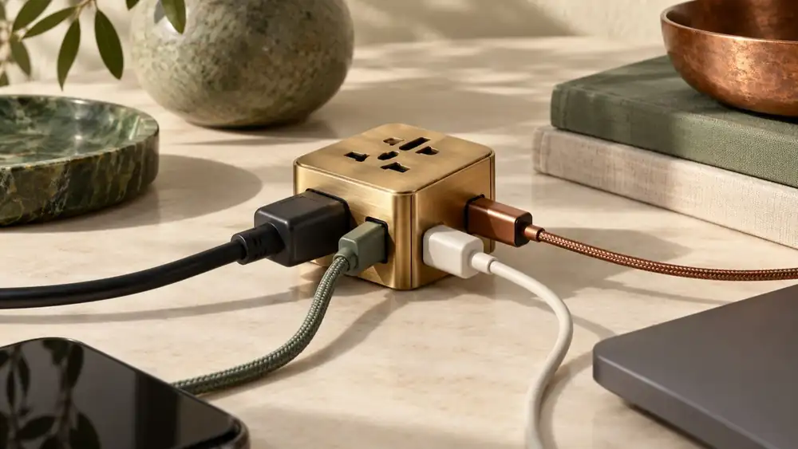

Занятие 7 · очный поток 7 · 26 ноября 2026
Решение перестало
быть догадкой.
Сегодня: глубокое исследование в шести ИИ
и аналитика ваших таблиц.
Сегодня: глубокое исследование в шести ИИ
и аналитика ваших таблиц.
Шесть занятий ИИ учился делать: писать, помогать, работать руками, рисовать. Сегодня он начинает знать.
Досье, промпт-инженерия, ассистенты в Gemini, ChatGPT на полную: проекты, навыки, расписание.
Codex на вашем компьютере, визуал без дизайнера.
Рынок, конкуренты, поставщики, цены, проверка компаний. И ваши таблицы: где утекают деньги.
шесть исследователей
12 минтурнир исследователей и проверка
25 минЗеркало 360 и проверка компании
10 минПоставщик, цена и исследование по шаблону
12 минСвои данные под рентген
25 минПрогноз, закупка и отзывы
12 минЧтобы отчёт работал завтра
7 минС 23 ноября новая модель в обычном чате, в поиске заметно сильнее прошлой.
Новое поколение моделей Google. Deep Research по-прежнему через плюсик.
Кнопка «Глубокое исследование» под строкой ввода. Вход только через Google.
Вышла 16 ноября. У бесплатного исследования недельный лимит.
Вышла 23 ноября. Исследование в карточке Writing.
Плюсик → «Запустить исследование». Новая модель на этой неделе.

Поиск, глубокое исследование, агент.
И правило трёх врачей.
Справочная. Один вопрос, один ответ за 10 секунд: цена, адрес, новость, кто выиграл тендер.
Детектив. Сам строит план, читает десятки сайтов, сверяет и приносит отчёт со ссылками за 5–30 минут.
Быстрый факт: цена, адрес, новость.
Решение на деньги: рынок, конкуренты, поставщики. Задаёт вопросы, показывает план.
Не узнать, а сделать руками: зайти на площадки, собрать цены, заполнить форму.
| Сервис | Где включить | VPN |
|---|---|---|
| Kimi | Кнопка «Глубокое исследование» под строкой или сразу kimi.ai/deep-research | не нужен |
| Qwen | Плюсик → «Глубокое исследование», уровень «Нормальный» или «Продвинутый» | не нужен |
| Z.ai (GLM) | Карточка Writing → Research-Backed Writing; таблицы в Data Insight | не нужен |
| Плюсик → «Запустить исследование», в строке появится метка «Исследование» | выключить |
| Сервис | Где включить | VPN |
|---|---|---|
| Плюсик → «Глубокое исследование» или /Deepresearch | нужен | |
| Плюсик «Добавить файлы» → Deep Research; источники: Google, Gmail, Диск | нужен | |
| Отдельной кнопки исследования нет: «Интеллект» → «Экспертный» | выключить | |
| Perplexity | Плюсик → «Глубокое исследование» (или «/» в строке) | лучше с VPN |



Важную цифру спросите у трёх разных ИИ. Совпали: верим. Разошлись: открываем ссылку и смотрим первоисточник.
Глубокое исследование, отчёт со ссылками, 10–20 минут.
Быстрее приносят отчёт, пока ChatGPT ещё думает.
Gemini ищет по Google. GigaChat и Алиса видят законы, суды и местные новости.
Тот же «детектив», но ищет по Google и может заглянуть в вашу почту и Диск. Нужен VPN.
gemini.google.com → плюсик «Добавить файлы» → Deep Research. Покажет план: «Изменить план» или «Начать исследование».
Поиск Google, в источники можно добавить Gmail и Диск. Отчёт за 5–10 минут.
«Экспортировать в Документы», аудиопересказ. Лимит обновляется каждые 5 часов.
Кнопка под строкой ввода. Отчёт со ссылками. Вход через Google
kimi.ai/deep-researchПлюсик → «Глубокое исследование». Силён в таблицах. Лимит на неделю
chat.qwen.aiWriting → Research-Backed Writing. Таблицы в Data Insight
chat.z.aiПлюсик → «Запустить исследование». Российские источники
giga.chatРежим «Экспертный». Русскоязычный веб
alice.yandex.ru| Задача | Кто лучше |
|---|---|
| Рынок, конкуренты, поставщики | ChatGPT, Gemini, Kimi: самый глубокий отчёт. Без VPN: Kimi, Qwen. |
| Поиск по Google, ваша почта и Диск | Gemini Deep Research, отчёт сразу в Google Документы. |
| Законы, суды, закупки, местные новости | GigaChat «Запустить исследование», Алиса AI. Проверка по первоисточнику: zakupki.gov.ru, kad.arbitr.ru. |
| Факт-чек со ссылкой на каждое утверждение | Perplexity и «прокурор»: второй ИИ проверяет первый. |
| Таблица: найти утечку, построить графики | ChatGPT, Qwen, Z.ai Data Insight. |
| Без VPN и бесплатно | Kimi, Qwen, Z.ai. Лимиты есть у всех, держите два-три в запасе. |
| Исследование по своим файлам | Gemini Notebook (бывший NotebookLM): отвечает только по вашим документам. |
Один промпт, три исследователя.
Потом второй ИИ проверяет первый.
«Ты аналитик… Решение: выходить ли…»
Топ-10, цены цифрами, отзывы
«Не ограничивайся первой страницей»
Таблица и 5 рекомендаций
Ссылка на факт, «нет данных»

Рынок и конкуренты в Уфе, закупки на монтаж и требования к участнику.
Закупки по категории и победители, досье на заказчика перед заявкой.
Аналоги и поставщики под заявку, пути параллельного импорта.
Клиники и цены на имплантацию, поставщики имплантов.
Конкуренты на Ozon, WB и Авито, закон о продаже ножей.
Условия 15 лизинговых компаний и ответ на «в банке дешевле».
Рынок и цены конкурентов, поставщики сырья с доставкой в Уфу.
Цены на 5 главных услуг у 15 компаний района.
Что изменилось в законе, цены пакетов аутсорсинга.
Судебная практика под ситуацию, без выдуманных номеров дел.
Как рекламируются 5 сильных игроков и 10 объявлений для вас.
Цена вопроса, новый канал, найм, закон и риски.
ChatGPT: глубокое исследование. Kimi и Qwen: тот же промпт, без VPN.
Задал вопросы? Нашёл местных? Цифры конкретные? Ссылки живые? Сколько думал?
Что совпало у всех, тому верим. Что нашёл только один, проверяем по ссылке.

10 главных цифр: подтверждено, не нашёл, противоречит.
Что совпало, что разошлось, чей источник надёжнее.
Одна страница для собственника, который читает 2 минуты.
Перед переговорами, тендером, отсрочкой платежа. Нет своей компании: возьмите себя, конкурента или того, кому платите.
Карты, 2ГИС, отзовики, Telegram, форумы, сайты жалоб.
Суды, долги, госконтракты, смена директора, красные флаги.
За что хвалят и ругают, 3 вопроса до оплаты.
Каждый ИИ приносит свою таблицу со своими колонками. Сравнить отчёты трудно.
Поставщик, цена с доставкой до Уфы, партия, срок, документы, источник. ИИ заполняет, отчёты сравниваются строка в строку.
Отчёты ChatGPT за это время дозреют.
После перерыва открываем свои таблицы.

Таблицы, план и факт, тихие утечки.
ИИ находит то, что глаз пропускает.
Даты, суммы, категории, количества, статусы. Имена меняем на «Клиент 1, Клиент 2»: анализ не пострадает.
ФИО клиентов и сотрудников, телефоны, адреса, номера договоров, реквизиты, номера карт.
| Таблица | Что внутри |
|---|---|
| Ножи и EDC: продажи по каналам | 4 канала × 5 категорий, заказы, возвраты, комиссия, реклама |
| Ножи и EDC: остатки и когда заказывать | 20 позиций, продажи по месяцам, остаток, срок поставки, мин. партия |
| Тендеры: поставка электротехники | реестр закупок: НМЦК, наша цена, цена победителя, результат, маржа |
| Запчасти: заявки и скорость ответа | заявки, часы до ответа, поставщик, опоздания, результат |
| Стоматология: врачи и направления | 7 врачей, записи, неявки, выручка, материалы, новые и повторные |
| Монтаж: коммерческие предложения | КП: менеджер, направление, источник, скидка, дни до звонка, статус |
| Двери: план, факт, брак | 4 серии, план и факт, брак по участкам, простои |
| Таблица | Что внутри |
|---|---|
| Лизинг: заявки и сделки | источник, предмет, сумма, лизинговая компания, одобрение, комиссия |
| Салон и массаж: мастера | 6 мастеров, визиты, выручка, новые, возвращаемость, отмены |
| Отделочные материалы на Авито | 6 категорий: объявления, просмотры, контакты, продажи, продвижение |
| Укрывные материалы: сезон | 6 позиций × 3 канала, продажи в м² и рублях, вопрос закупки к весне |
| Реклама: кампании по каналам | 5 кампаний: расход, клики, заявки, продажи, выручка |
| Учёт и охрана труда: клиенты и часы | 14 клиентов: абонентка, часы, допуслуги, штрафы |
| Универсальная: малый бизнес | выручка, себестоимость, зарплаты, аренда, реклама, прибыль, заявки, жалобы |
| Где | Чем хорош |
|---|---|
| Считает кодом, рисует графики прямо в ответе | |
| Qwen | Без VPN, подробный пересказ. Точный расчёт и графики: «Режим агента» |
| Z.ai Data Insight | Без VPN, отчёт с графиками. Интерфейс на английском |
| Kimi | Без VPN, таблица и выводы в одном окне |
| Excel и Google Таблицы | Надстройка ChatGPT или кнопка Gemini прямо в файле |
| Таблица | Что спрятано | Как находит ИИ |
|---|---|---|
| Тендеры | Светотехника с июля: 0 побед из 12 | вопрос в лоб |
| Монтаж, КП | Звонок позже 3-го дня: договоров в 2,4 раза меньше | вопрос в лоб |
| Ножи | 3 позиции кончатся до поставки | находит сам |
| Реклама | РСЯ: 3 447 ₽ за продажу, VK дорожает с августа | РСЯ сам, VK в лоб |
| Лизинг | Агрегатор: 237 заявок, 9 сделок | находит сам |
ИИ считает по истории. Он не знает, что в декабре уходит ключевой мастер и что рядом открылся конкурент.
Сезонность, тренд, график с коридором.
Остаток, дата окончания, дата заказа с учётом поставки.
Пересчитать прогноз с тем, чего нет в цифрах.

Один отзыв это пациент.
Тридцать это поликлиника.
И у неё есть общий диагноз. 20–30 отзывов с 2ГИС или Яндекс Карт подряд, вставили после промпта. Это задание на дом.

Поисковик на ИИ: у каждого факта ссылка. Бесплатно 3 Pro-поиска в день и 1 глубокое исследование в месяц, Pro около 20 $
perplexity.aiОтветы со ссылками на нормы, проверка договоров. 20 ₽ за запрос, пробный доступ по заявке
consultant.ruПравовые ответы и судебная практика, проверка рисков договора. 3 дня бесплатно
iskra.garant.ruОтчёт о компании, риски сделки, сравнение до 5 поставщиков. Платный модуль
focus.kontur.ruСтатистика любого Telegram-канала: рост, охваты, сколько на самом деле читают у конкурента
tgstat.ruДосье на компанию по ИНН: суды, долги, связи, госконтракты. Rusprofile в базе бесплатно, Фокус платный
rusprofile.ruПервоисточник по тендерам: заказчик, цена, победитель. ИИ даёт ссылку, проверяем здесь
zakupki.gov.ruСуды компании как истца и ответчика, первоисточник для проверки контрагента
kad.arbitr.ruотчёт в Word или PDF
ChatGPT: вопросы по отчёту
Gemini Notebook: пересказ, таблица
конкуренты раз в месяц
Кто поставил Codex на занятии 5: навык «Дипресёрч» с двенадцатью сервисами поиска. Ставить дома, по шагам.
Читает закрытые сайты, карты, маркетплейсы, соцсети, PDF.
Пошаговая инструкция прошлого потока: навык, файл ключей, шесть ключей.

Где кнопка в шести ИИ, пять слоёв промпта, 22 готовых промпта под ваш рынок.
Правило трёх врачей, прокурор, исследование по шаблону.
14 тестовых таблиц, вопрос в лоб, прогноз и закупка.
Шпаргалка остаётся у вас.
Все промпты копируются кнопкой.